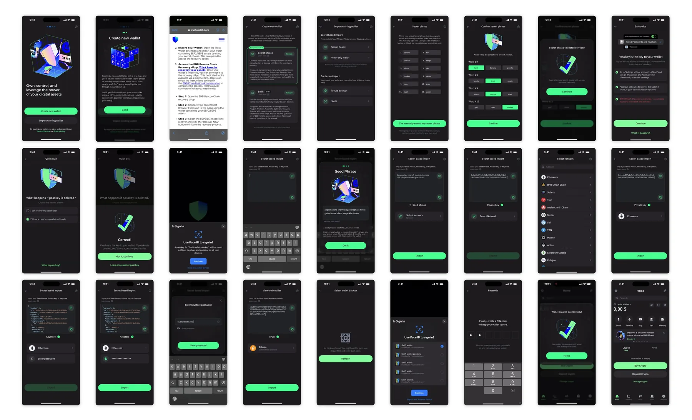

I was lead designer on Trust Wallet's Banking and Fiat squad, the bridge between traditional money and crypto, shipping to a base of over 200 million. Onboarding was not our remit. I argued that it should be, because the front door worked fine for people who already held crypto and barely at all for the ones arriving from ordinary money, who were my department. So I took it.
Lead Product Designer, Banking and Fiat squad. The bridge between traditional money and crypto, on a base of over 200 million. Apr 2025 to Sep 2025.
discovery
I scoped onboarding as everything between downloading the app and landing on Home for the first time, and judged it as the user I was there for: someone who has moved money their whole life and has never held a wallet. Then I walked it the way they would, alongside Phantom's. Trust Wallet optimizes for speed. Phantom optimizes for reassurance. Neither had it right.
Speed was costing more than it saved. The passcode arrives before there is anything to protect, so a new user taps 123456 to get past it and pays for that later. Face ID and notification prompts fire with no context. Choose Secret phrase and you land on Home without ever naming the wallet or seeing the phrase. The whole thing is over so quickly it can read as broken. None of that is a problem if you already own crypto. All of it is a problem if you do not.
Phantom buys its reassurance with more than double the steps, and carries its own cracks: help that throws you out to the device browser mid-flow, Face ID framed as added security when it is really a shortcut. Mapping the new user's journey put the real problem somewhere neither wallet had it on a screen. The doubt lived in the pace.
solution
The passcode moved to the very end, right before Home. Now there is something to protect, a real reason to choose a strong one, and no wandering back to reset it, which the old flow allowed.
The secret phrase got taken seriously. Showing someone twelve words means nothing if nobody checks they wrote them down, so I added a validation step, the one the passkey flow already had. And since Trust Wallet's passkeys authenticate through Face ID, I said so in the early safety checks, so the Face ID prompt arrives expected rather than out of nowhere.
Around that: a splash carousel the user swipes at their own pace, a help icon on nearly every screen opening an FAQ or a contextual explainer without leaving the app, and a short animation at the end confirming the wallet is ready. New and imported wallets now finish on the same two steps, so anyone who sees both flows sees one product.
information architecture
Import offered six ways in, in no particular order. Two pull from the device, one is view-only and not really an import, three need a formatted text input and a network. Researching what each actually does turned a re-ordering job into a grouping job: secret based, and on device.
Then the three text ones collapsed into a single screen that defines its own behavior from whatever you type or paste. Twelve words get identified as a seed phrase while it keeps parsing in case there are eighteen or twenty-four, with Import already live. A private key requires a network before Import enables. A keystore adds a password prompt once the network is set. View-only reuses the same interface and keeps its own flow, because what you end up holding is different.
All of it built on Binance's design framework and pushed into Trust Wallet's own language.
Every screen, every flow
